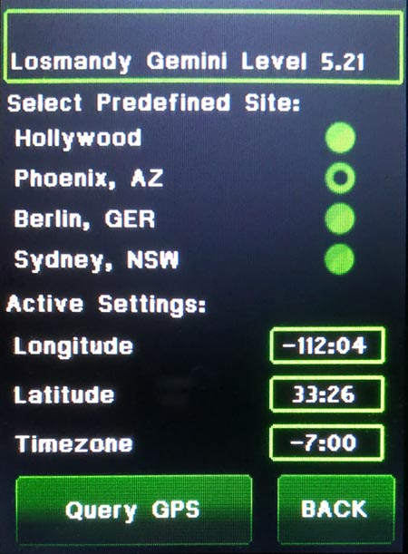

| Interactive Hand-Controller Menus - click on green button to Navigate |
|
Get the Latitude, Longitude, and Time Zone offset from your address.  |
Enter your coordinates into the latitude and longitude fields, don't worry about the timezone offset, we will do that on the next screen. If you select different locations, you can see the sign change on the display. Notice that the Longitude is
negative in the USA and positive in Europe Touch in the Longitude box. The Longitude entry screen will appear. Do what is indicated in that screen. After that you will be brought back to this screen. Touch the Latitude box. You will be taken to a screen similar to the one you just filled out. After filling out that screen you will be brought back here again. Longitude is entered as 180 to -180 degrees: 0 to 59 minutes: and 0 to 59 seconds. Seconds is optional and not shown. Latitude is entered as -90 to +90 degrees: 0 to 59 minutes: and 0 to 59 seconds. Seconds is optional and not shown. Hit the Back button. Note: the Hemisphere is selected entirely by the sign of the Latitude in the Gemini-2. Positive for Northern Hemisphere and negative for Southern Hemisphere. It was the same in the Gemini-1 also. No switches to change at all. Query GPS button will try to get the GPS coordinates from a GPS unit hooked up to Serial Port 1, instead. |
|
The speed of the GPS serial port
defaults to 4800 baud. It's speed is set in the Web interface
under Serial Tab. Note: If you are using a GPS receiver to get the time, then the offset does not matter. Gemini-2 only uses UTC time for all the internal calculations, and a GPS returns UTC time only. You can disregard the time screen when using a GPS receiver. |